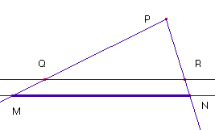
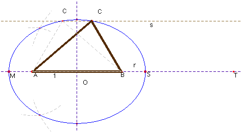

Problema 100.- Dado un lado l, la altura correspondiente h y el radio de la circunferencia inscrita, R, construir el triángulo.
Solución de Saturnino Campo Ruiz. profesor del IES Fray Luis de León (Salamanca).-

El área del triángulo buscado es igual al producto del semiperímetro p por el radio R de la circunferencia inscrita. También es igual al producto de la mitad de una base l por la altura sobre ella h. Así pues tenemos la igualdad 2 p·R = l·h. de dondeEsta relación permite calcular el valor p = MN del semiperímetro del triángulo.
En la figura PR = 2R; PN = h y QR = l, con lo cual, MN = p por el teorema de Thales.

Restando del perímetro 2p el valor conocido del lado, obtenemos el segmento suma de los otros dos. En una recta r tomamos dos puntos A y B, de modo que la distancia entre ellos sea precisamente l. A una altura h llevamos una paralela a ella s. El tercer vértice del triángulo, el punto C, ha de estar situado sobre la paralela y ha de ser tal que la suma de las distancias de ese punto a los extremos A y B sea igual al valor determinado antes 2p — l. El punto C pertenece pues, a la elipse de eje mayor 2p — l y focos los puntos A y B. La intersección de esta elipse con la paralela a AB nos da la posición del vértice C.En la segunda figura, hemos tomado MT = 2p; y ST = l, con lo cual nos queda que MS = 2p—l. La segunda solución, que aparece atenuada, es el triángulo simétrico respecto de la mediatriz de AB.
(Para dibujar la elipse que pasa por 5 puntos, hemos tenido que utilizar un punto auxiliar 1, sobre el eje mayor, y tomar arcos con centros en los focos y radios la distancia de este punto a los vértices M y S. También hemos hallado los otros dos vértices, con lo cual teníamos ya 6 puntos en lugar de los 5 necesarios).